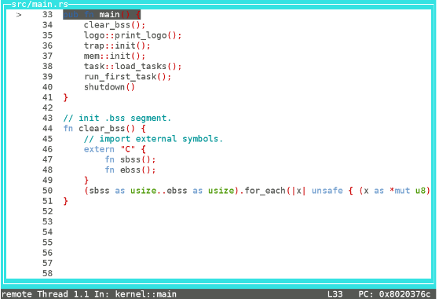
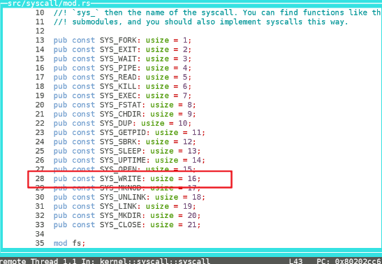
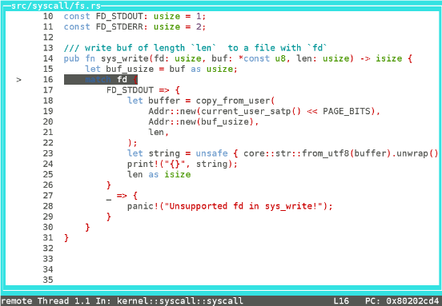

gdb 调试
gdb 是我们在调试程序时的一个强有力的工具，特别是对于操作系统这种底层软件，能够更好地帮助我们定位问题，那么我们该如何使用它。
Makefile配置
先来看一下 gdb 在 Makefile 中的配置。
qemu-gdb : kernel-bin
@echo "default remote debug port is 26000."
qemu-system-riscv64 \
-M 128m\
-machine virt \
-nographic \
-bios $(BOOTLOADER) \
-device loader,file=$(KERNEL_BIN),addr=$(KERNEL_ENTRY_PA) \
-S -gdb tcp::26000
gdb :
gdb-multiarch -ex 'file $(KERNEL_ELF)' -ex 'set arch riscv:rv64' -ex 'target remote localhost:26000'
目标 qemu-gdb 最后一行，-S 选项是说在程序开始时暂停，-gdb 设置为 gdb 调试模式，调试端口为 localhost:26000。
目标 gdb 是启动 gdb-multiarch, 这是支持 riscv64 的 gdb，-ex 选项是在打开时自动执行的一条指令，避免每次使用时都要手动连接。最后的 target remote localhost:26000 就是连接到我们上述设置的端口，然后就可以开启调试了。
gdb 常用命令
这里简单介绍常用的 gdb 命令，详细的指令说明可以在 gdb 中使用 help 指令来查询，如 help file，help watch。
file 加载符号表
file kernel，加载kernel文件的符号表，kernel一定要是一个 elf 文件。有时会出现找不到这个文件的问题，注意进入 gdb 之后的文件路径和进入 gdb 之前的 shell 路径是相同的，所以要检查当前工作路径是否正确 (pwd)。
b/break 设置断点
b *0x80200000，在0x80200000这个物理地址设置断点，注意在一个地址打断点前面要加*。b main，在main处设置断点，要保证符号表里有这个符号。b 18，在当前 src 文件的 18 行设置断点。
bt/backtrace 查看栈帧
bt，查看所有栈帧。
s/step 单步执行
s，执行一条源代码。会进入函数内部。
si/stepi 单步汇编
si，执行一条汇编指令。
n/next 多步执行
next 3，执行 3 条源代码。不会进入函数内部。
c/continue 继续执行
c，持续执行知道遇到下一个断点（若存在）。
p/print 打印表达式的值
p/x $pc，以 16 进制打印 pc 寄存器的值，注意打印寄存器要加$。p str，打印变量 str，但是可能这个变量会被编译器优化掉，结果可能会出现<optimized out>
x/examin 检查内存
x/3i $pc，打印 pc 地址开始的 3 条指令。x/10b 0x80204800，打印0x80204800开始的 10 个字节信息。
layout 视图
layout src，打开源代码视图。layout asm，打开汇编指令视图。layout split，拆分视图。
watch 检查点
watch a > 10，当 a > 10 时触发断点，否则不会触发。
调试实例
以本项目为例。
首先在一个 shell 中输入命令 make qemu-gdb。
然后在另外一个 shell 中输入命令 make gdb。
在 0x80200000 打个断点。
(gdb) b *0x80200000
Breakpoint 1 at 0x80200000
(gdb)
然后 c 运行到这个断点。
(gdb) c
Continuing.
Breakpoint 1, 0x0000000080200000 in stext ()
(gdb)
查看 $pc 后的 5 条指令。
(gdb) x/5i $pc
=> 0x80200000 <stext>: auipc sp,0x47
0x80200004 <stext+4>: mv sp,sp
0x80200008 <stext+8>: auipc ra,0x3
0x8020000c <stext+12>: jalr 1892(ra)
0x80200010 <stext+16>: unimp
(gdb)
这里的指令对应的就是 entry.asm 中的 _start 处的代码。
#![allow(unused)] fn main() { .section .text.entry .global _start _start: la sp, boot_stack_top call main .section .bss.stack .globl boot_stack_lower_bound boot_stack_lower_bound: .space 4096 * 16 .globl boot_stack_top boot_stack_top: }
然后单步汇编 4 次。
(gdb) si
0x0000000080200004 in stext ()
(gdb) si
0x0000000080200008 in stext ()
(gdb)
0x000000008020000c in stext ()
(gdb)
kernel::main () at src/main.rs:33
33 pub fn main() {
(gdb)
直接回车执行的是上次的命令。可以看到已经进入了 main 函数。
使用 layout src 即可查看源代码视图，layout asm 查看汇编指令视图。退出 layout 可以使用快捷键 ctrl x, a。

然后在 syscall 函数处打个断点并运行。
(gdb) b syscall
Breakpoint 1 at 0x80202cc6: file src/syscall/mod.rs, line 43.
(gdb) c
Continuing.
Breakpoint 1, kernel::syscall::syscall (syscall_id=16, args=...) at src/syscall/mod.rs:43
43 match syscall_id {
(gdb)
然后查看传入的参数。
(gdb) p syscall_id
$1 = 16
(gdb) p args
$2 = [1, 8192, 1]
(gdb)
这里表示系统调用号为 16，也就是 sys_write，可以查看上面的常量定义。

然后执行两次 s 进入 sys_write。
(gdb) s
44 SYS_WRITE => sys_write(args[0], args[1] as *const u8, args[2]),
(gdb) s
kernel::syscall::fs::sys_write (fd=1, buf=<optimized out>, len=<optimized out>) at src/syscall/fs.rs:16
16 match fd {
(gdb)

在 24 行打个断点，然后打印 string 的值。
(gdb) b 24
Breakpoint 2 at 0x80202d70: file src/syscall/fs.rs, line 24.
(gdb) c
Continuing.
Breakpoint 2, kernel::syscall::fs::sys_write (fd=<optimized out>, buf=0x2000, len=1) at src/syscall/fs.rs:24
24 print!("{}", string);
(gdb) p string
$1 = "B"
(gdb)
演示完毕。